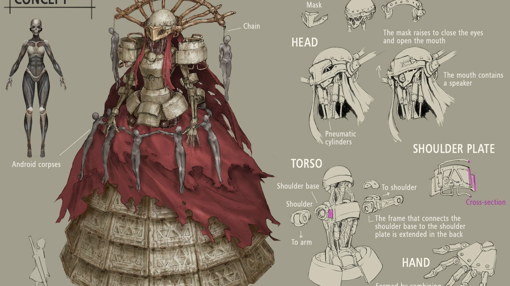
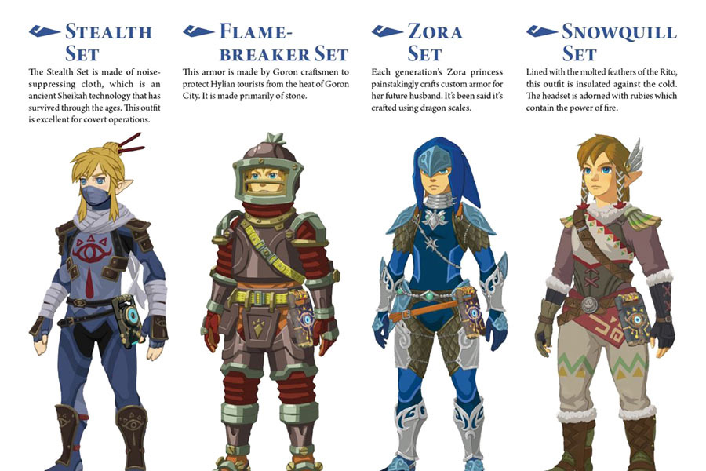
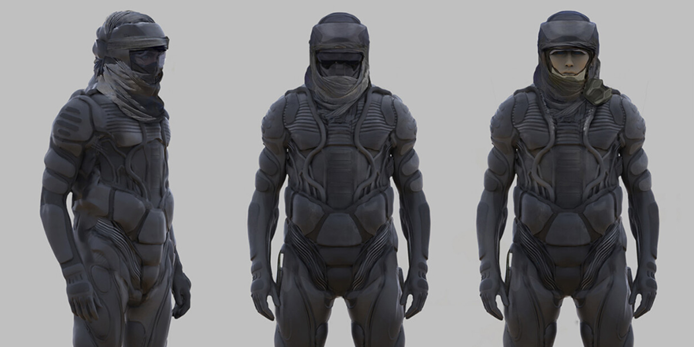
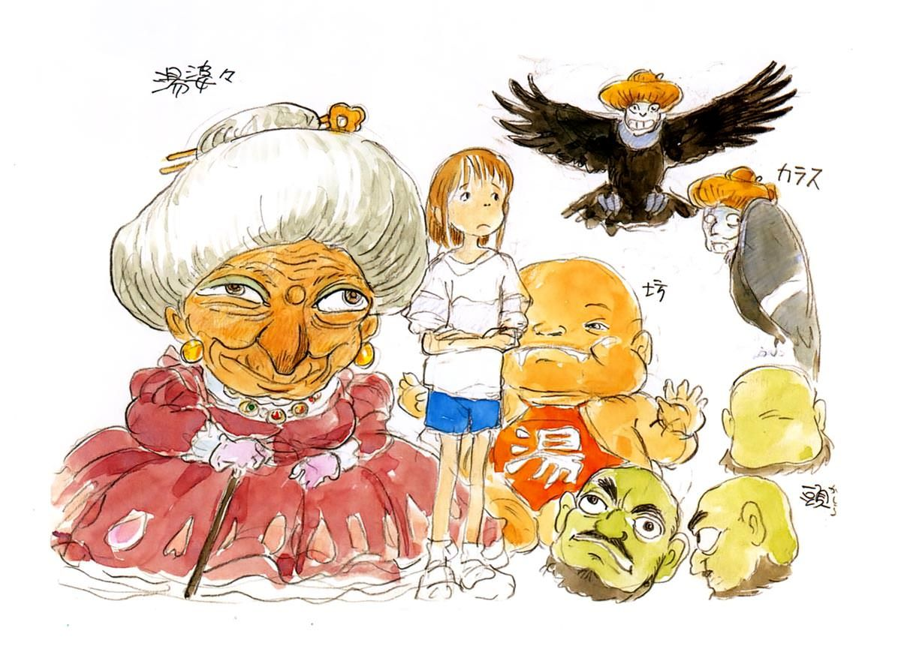

Character design in video games is shaped by the need to combine visual appeal with functionality in an interactive medium. Unlike in film or animation, players often control or closely interact with video game characters, requiring designs that are engaging from multiple angles and adaptable to gameplay mechanics. Silhouettes, proportions, and iconic features are emphasized to ensure that characters remain recognizable and distinct, even in fast-paced or visually complex environments. A character's appearance often reflects their role or abilities—such as a heavily armored warrior signaling strength or a streamlined assassin implying agility—helping players intuitively understand their function within the game.
 Concept art of Simone from Nier Automata, 2017, by Hisayoshi Kijima.Video game character design also evolves alongside the player’s experience. Characters may gain new costumes, accessories, or visual updates that reflect story progression, achievements, or gameplay upgrades. These changes not only enhance the narrative but also provide players a sense connection to the character. Costumes and equipment often serve two purposes, those being adding aesthetic depth and visually representing game mechanics, like health, abilities, or power-ups. Through these layered designs, video game characters become an integral part of the immersive and dynamic storytelling unique to the medium.
 Concept art of Link's Armor from The Legend of Zelda: Breath of the Wild, 2017, by .Depending on the medium, character designs are often made with the intent of conveying different aspects of a story. Live action films and 3D animation often have the benefit of costumes. When a designer creates an ornate and dramatic outfit to be used in a film production, this can be handled in the process of costume making. This is to say, in some cases detail is implored in a character’s design, as it can be supported more readily in a final product. This allows a designer to explore characters in a more direct manner, things like texture, intricate detailing, and functional costume design.
 Concept art for Dune, 2021, by Joseph Cross.The same, however, can not be said about 2D animation. In 2D animation we often see a greater emphasis on symbolism when it comes to character design. Film only demands a singular costume, or potentially a few variations of a costume are necessary, however, animation requires a character to be drawn hundreds, if not thousands of times if considering the content length and frame-rate of a production. This means that things like personality, culture, and backstory are often designed to be represented more efficiently with things like silhouettes and shape-language, coloration, and staple pieces.
 Concept art for Spirited Away, 2001, by Hayao Miyazaki.